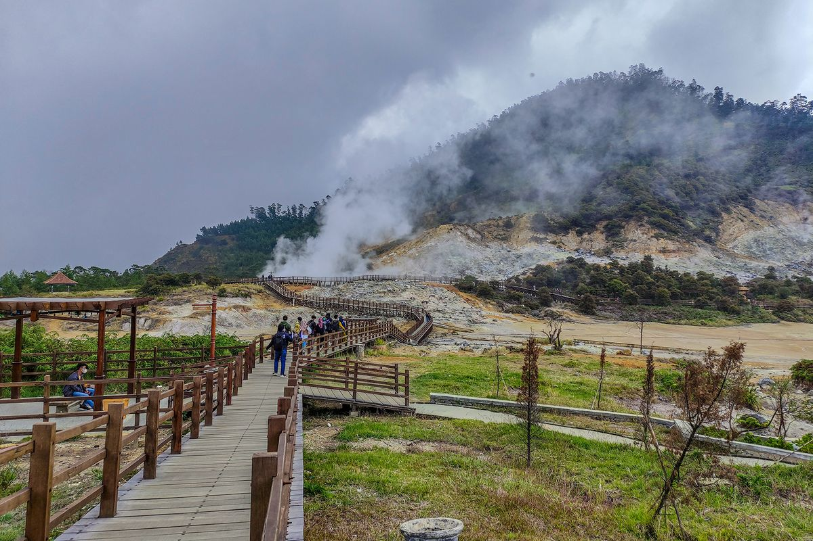

|
|
Beranda | Destinasi Wisata | Galeri | Event | Tentang Kami dan Kontak | |
|
Destinasi Wisata Unggulan Jawa Tengah Jelajahi keindahan alam, budaya, dan sejarah yang tersebar di berbagai penjuru Jawa Tengah. Mulai dari pesona candi megah, pegunungan berkabut, hingga pantai eksotis yang memikat hati. |
 Candi Borobudur Candi Buddha terbesar di dunia, ikon sejarah Indonesia yang mendunia. |
 Pantai Menganti Pantai indah dengan pasir putih dan pemandangan matahari terbenam yang menakjubkan. |
 Karimunjawa Kepulauan tropis di Jepara dengan keindahan bawah laut dan pasir putih memukau. |
 Lawang Sewu Bangunan ikonik penuh sejarah di pusat kota Semarang. |
 Keraton Surakarta Pusat kebudayaan Jawa yang kaya akan sejarah dan tradisi. |
 Dieng Plateau Negeri di atas awan dengan kawah aktif, telaga warna, dan udara dingin yang segar. |
 Kawah Sikidang Kawah aktif di Dieng dengan semburan belerang dan kabut mistis yang memikat wisatawan. |
 Candi Gedong songo Kompleks candi Hindu di lereng Gunung Ungaran dengan panorama alam menawan. |
 Pantai Karang Bolong Pantai dengan tebing berlubang unik dan suasana alami yang cocok untuk wisata alam dan foto-foto. |
 Pantai Karang Jahe Pantai tersembunyi dengan pasir putih dan ombak yang tenang, ideal untuk bersantai. |
 Candi sari Candi Hindu yang terletak di dekat Candi Prambanan, terkenal dengan arsitektur yang indah. |
 Temanggung Daerah pegunungan dengan kebun teh dan pemandangan alam yang menakjubkan. |
|
© 2025 Pesona Jateng. All rights reserved. Dikelola oleh Tim Sigma Ikuti kami di Instagram |